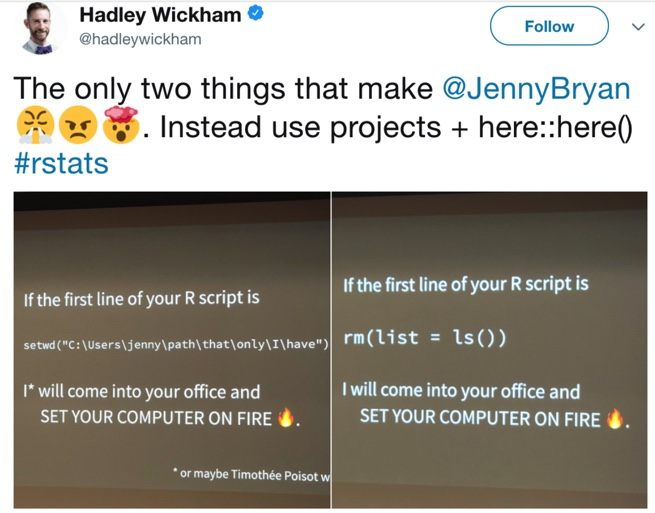

Grande parte de um projeto científico consiste em realizar análises estatísticas, processamento de dados e geração de figuras. Portanto, ter scripts bem organizados e que possibilitam que outras pessoas possam seguir os mesmos passos realizados por você é de extrema importância para a reprodutibilidade.
Neste documento apresentarei funcionalidades do RStudio e alguns pacotes que auxiliam a organização das análises em scripts.
A primeira dica é:
 Outras dicas para que o Hadley não entre na sua casa e queime seu computador:
NUNCA USE ESSES COMANDOS
read.table(file.choose())
read.csv(file.choose())
read.csv2(file.choose())Espero esclarecer os porquês de não utilizar estes comandos após o término dessa leitura.
1 - Nunca utilize caminhos absolutos
Quem nunca se deparou com dificuldades para leitura de dados? Isso é um problema frequente, ainda mais quando estamos começando a nos familiarizar com o R. A primeira dica do que nunca fazer é nunca utilizar caminhos absolutos para leitura de dados. Por que? Caminhos na linguagem da computação corresponde ao trajeto que o programa deve fazer para acessar um determinado arquivo. Um caminho absoluto quer dizer que passamos para o programa o caminho completo para acessar o arquivo desejado, ou seja, desde a base do trajeto até o local do arquivo desejado. Por exemplo, o que está no código seguinte:
read.table("/Users/gabrielnakamura/OneDrive/Aulas/Disciplina_ppgEco/Curso_UFRGS_organizacao_de_dados") # caminho absoluto para acessar um arquivo deste cursoPor outro lado, um caminho relativo é um atalho. Ao invés de informar todo o caminho como acima, nós informamos para o programa apenas a parte deste caminho que ele desconhece, ignorando todo o resto que é conhecido, e, portanto, não precisa ser indicado. Por exemplo, o mesmo caminho do código anterior pode ser expresso em termos relativos como:
read.table("~/Curso_UFRGS_organizacao_de_dados") # caminho relativo para acessar um arquivo deste cursoPara responder essa questão basta pegar um código escrito por outra pessoa que usa caminhos relativos em seus scripts e tentar rodar na sua máquina. O que vai acontecer? Uma mensagem de erro.
Isso acontece pois o caminho absoluto na sua máquina não é o mesmo caminho absoluto da minha, ou de qualquer outra pessoa, a não ser por uma coincidência absurdamente improvável. Logo, a solução para esse problema é a utilização do caminho relativo. E como fazemos isso está no próximo tópico.
Caminhos relativos para os arquivos podem ser obtidos a partir do uso do RStudio, mas especificamente utilizando uma ferramenta do RStudio cahamado Rproject. A mágica do Rproject é transformar todo caminho em relativo, em termos mais simples, ele pega o caminho absoluto e transforma num atalho. Na prático, tudo o que precisa ser informado para leitura de qualquer arquivo agora é o caminho a partir do local onde o Rproject se encontra. Por exemplo, vamos ler o arquivo dados_test que pode ser obtido baixando o repositório GabrielNakamura/MS_FishPhyloMaker através do código:
download.file(url = "https://github.com/GabrielNakamura/MS_FishPhyloMaker/archive/master.zip", destfile = "MS_FishPhyloMaker.zip") # para baixar
unzip(zipfile = "MS_FishPhyloMaker.zip") # para unziparA pasta vai ser baixada e unzipada para o seu atual diretório, não se preocupe com isso nesse moemento, o exercício serve apenas para mostrar como utilizar caminhos relativos para leitura de dados para dentro do R.
Temos três opçoes:
setwd("~/OneDrive/Manuscritos/MS_FishPhyloMaker_") # primeiro especificando o diretório
raw_data <- read.csv("~/data/osm-raw-data.csv", sep=";") # agora lendo os dadosIsso é uma opção, mas lembre-se que Jenny Bryan irá entrar no seu escritório e queimar seu computador. Logo, não parece uma opção.
Não queremos que ninguém queime nosso computador, então podemos tirar o set_wd e utilizar o caminho absoluto
raw_data <- read.csv("/Users/gabrielnakamura/OneDrive/Manuscritos/MS_FishPhyloMaker_/data", sep=";")Isso funcionaria, mas apenas no meu computador. Logo, falhamos na reprodutibilidade
raw_data <- read.csv(here::here("data", "osm-raw-data.csv"), sep=";")Todos conseguiram ler? Se sim, conseguimos atingir o primeiro passo para um trabalho reprodutível: Todos conseguem ler os dados, independente do computador que estivermos
Para conseguir a reprodutibilidade utilizamos duas ferramentas, o Rproject, que possibilitou a utilização do caminho relativo, por isso informamos apenas que o arquivo “osm-raw-data.csv” está na pasta “data”, pois o diretório raiz agora é aquele em que o projeto está hospedado.
A segunda ferramenta que utilizamos foi o pacote {here}. A importância do pacote, além de simplificar a sintaxe pois precisamos apenas digitar o nome do arquivo e da pasta onde ele se encontra, está no fato de não precisamos ficar ajustando separadores de pastas de acordo com o sistema operacional. Enquanto no sistema OS se utiliza “/”, em Windows se utiliza “//”, com o here não há necessidade de preocupação com a troca do caracter.
{kind=link}